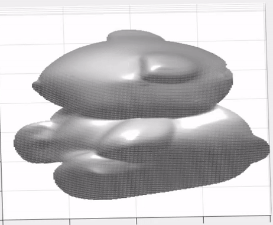
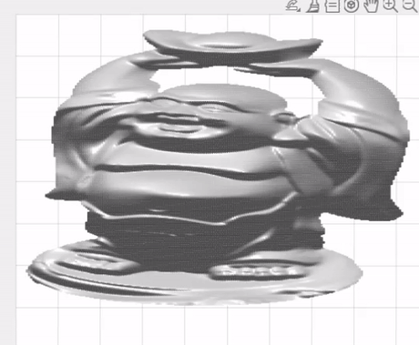
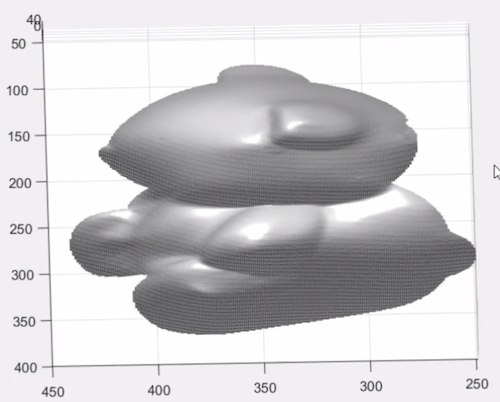
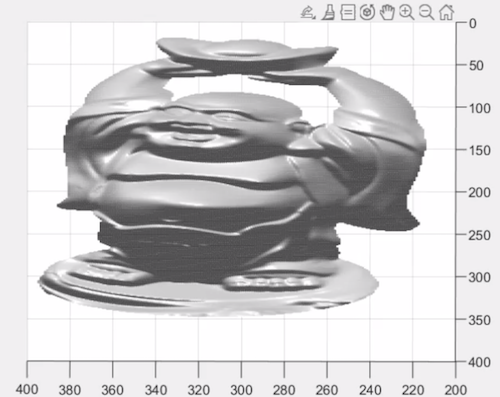
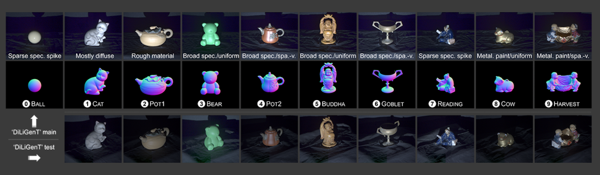

2D To 3D Object Reconstruction
Project By Ankur Singh, Kevin Joseph, Sarah Kowal, Rohit Singhal
Background
Goal
The idea for this project was created through an interest in game design and development. A curiosity in the methodology and process of creating huge virtual worlds, our group thought of researching how objects are created to look so realistic and proportionate. This led us to the central objective of this project which is to use computer vision to convert real world images of objects into mesh-based 3D models that could be imported into graphics projects or video games.
Motivation
2D to 3D reconstruction has a vast number of applications from game design to modeling. The process of recreating an object in three dimensions can be highly time consuming and require a lot of hardware power. The time it takes to create 3D models for an environment often causes developers to create more minimalistic environments with fewer 3D models, often sacrificing how realistic the environment looks. By creating a program that could convert objects in images into 3D models, it might be possible to quickly create multiple 3D models in just a fraction of the time it would normally take. An extension of this project could even involve processing an entire environment from images rather than just individual objects. This problem is applicable in a large variety of fields. It can be applied to game development, real estate, and any other industry that could benefit from having a 3 dimensional model of a physical object. A program like this can increase efficiency and provide more detailed and realistic visuals for images of real world objects.
Using computer vision, the time and effort required to create such models can be reduced drastically. The implementation of such a program in this project focuses on reconstructing 2D models to 3 Dimensions and attempts to expand the software to allow the user to specify how high/low poly they want the meshes to be and to make the software easier for users to use.
Current State of the Art
There are many types of photogrammetry software and equipment that have the ability to turn images into 3D models however, they all have their limitations. Free software that is available is online. These sites are good at creating models from images that are asymmetrical. Other sites can create 3D models from a single asymmetrical image using artificial intelligence. The biggest caveat to this type of software is that it is often centralized around one type of object, for example, facial reconstruction. More advanced software can produce more realistic models using multiple photos. Most photogrammetry software takes information from 2D images and creates a point cloud which becomes a 3D mesh. Most preexisting photogrammetry software default to producing high poly 3D meshes, which would be out of place in an environment with premade low poly assets.
The current state-of-the-art for photometric stereo, specifically, involves maintaining a consistent camera position, and inputting the light source directions of each image. These steps could be difficult for regular users.
Allowing the user to determine and express their preferences for low vs high poly models while also using uncalibrated photometric stereo in this implementation provides the user with higher flexibility for the output 3D model.
Our Solution
Image Alignment
Multiple input images are typically required in 2D to 3D object reconstruction. When using multiple images of one object, it is important that the same points on the object can be identified in each picture. Our initial approach to ensure that the photos were aligned properly was using a SIFT implementation with a homographic projection. SIFT would be used to locate key points in the images and the homographic projection only keeps the parts of the images that intersect. This implementation would make it easier for the user as they would not have to be too concerned with the camera position. Unfortunately, the SIFT implementation failed due to strongly differing lighting conditions in the dataset. Our solution to this problem was to require a stationary camera position.
Light Direction Estimation
We then needed to address finding the light directions of each image. Our light source direction vector estimations for the images were obtained using a Convolutional Neural Network. Prior to the CNN, the light source directions were changed from cartesian to spherical coordinates, and were later transformed back. We found that when a large number of photos is used, the light direction estimates produced by the CNN increased the photometric stereo accuracy.
Photometric Stereo
The next step was identifying varying depths and surface orientations in the images. We used a photometric stereo to produce surface normals at each pixel of each image. We solved for the Lambertian case, which only cares about diffuse lighting, by doing the matrix calculation mentioned in the lecture with the image intensities and estimated light source directions. To allow for the use of more than 3 images to reduce the effects of noise, we used least squares estimation.
Clustering Normals
The next step helps with the defining characteristic of our program, making low-poly models. The photometric stereo is very helpful because it produces a normal map instead of just a depth map. With the normal map, we can use the image coordinates and surface normals in a clustering algorithm that groups nearby pixels with similar surface normals. Using k-means clustering is what gives the user the ability to choose their poly level. A higher value of k yields a higher-poly model because there will be more clusters with different surface normals at their centers.
Normal to depth map
Our next concern was generating a depth map from the normal map. The normals can be thought of as the derivative of the depth. Since the normal map is discrete, our initial thought was to iteratively go through the pixels and add the normal’s respective dx/dz or dy/dz values. However, this creates a lot of noise. To compensate for this, we instead decided to use the frankot-chellappa algorithm. This algorithm involves a least squares estimation over the fourier domain to make a depth map with less noise.
Depth Map to STL
We used the MatLab surf2stl function to convert our depth maps into STL files that can be used in other programs. The clustering makes the STL file appear low-poly however, all files have the same level of poly. This could still be useful to have the model fit into a pre-existing low-poly environment, but it would not help with performance unless the user uses a tool like Blender to combine faces of the mesh.
Result
Bear (20 Angles) Buddha (20 Angles)  
Our computer vision model is able to successfully create stl files for a specific viewpoint/angle of a 3D model (corresponding to the 2D image data). We did realize certain strengths and limitations of our approach, such as:
- Our program is versatile enough to create accurate 3D models from the DiLiGenT-Test and DiLiGenT-MV datasets, even though the CNN was only trained on the DiLiGenT dataset with a fixed viewing angle.
- However, our light source estimation is not as accurate on real-world images, but that’s expected given we don’t have enough data in our dataset for more diverse environments and light sources.
| Object Name | 2D Image | 3D Render |
|---|---|---|
| Bear |  | |
| Buddha |  |
Future Development and Applications
There are a variety of aspects of this implementation that can be improved in the future. Currently, the implementation requires the user to have a still camera as it uses uncalibrated photometric stereo. Improving this aspect by using light source estimation techniques can provide added benefit to the user as they would have to pay attention to the placement of the camera less, creating a more flexible program. Another area of improvement could be to account for non-lambertian materials, but that would most likely require using a CNN to create the entire normal map instead of just predicting light source directions.
Furthermore, the convolutional neural network could be improved by training more diverse data or by using transfer learning to help our data adapt to different environments and light sources. Additionally, it would be good to find a way to change the stl creation from using surftostl to stlwrite using MatLab’s triangulation objects to actually decrease the poly count instead of just looking low-poly.
These programs can be implemented in any field or area that requires virtual modeling. This includes game design, real estate, medicine, film, etc. It decreases the time and effort needed to construct objects in virtually three dimensions.
Source Code and Dataset
Brief Details

Here, we are usng the ‘DiLiGenT’ Photometric Stereo Dataset.
Boxin Shi, Zhipeng Mo, Zhe Wu, Dinglong Duan, Sai-Kit Yeung, and Ping Tan, "A Benchmark Dataset and Evaluation for Non-Lambertian and Uncalibrated Photometric Stereo", In IEEE Transactions on Pattern Analysis and Machine Intelligence (TPAMI), Volume 41, Issue 2, Pages 271-284,2019. PDF Supplementary Material
We modified the DiLiGenT dataset to be smaller and easier to load the data. Download the dataset from this Google Drive.
light_cnn_inceptionv3.mat: Our code includes a pre-trained network for estimating light-source directions based on the inception-v3 CNN in MatLab.
Our code includes many different functions for different steps of our pipeline. You can find the code on Github.
CodeBase Breakdown
git clone git@github.com:Alphamineron/2D-To-3D-Object-Reconstruction.gitFor further steps, you need a valid matlab licensed binary installed on your system. Below are example commands for executing matlab on a macOS machine.
Running Matlab R2020a on macOS
Add matlab executable to the PATH variable
export PATH="/Applications/MATLAB_R2020a.app/bin:$PATH"Launch in nodesktop mode:
matlab -nodesktopWithin Matlab Console
createModel("DiLiGenT/bearPNG", 'bear.stl', 7)
renderMV("DiLiGenT-MV/buddhaPNG")
loadData: loads images and spherical coordinates from one of the directories in any of the DiLiGenT datasets (example: loadData(“DiLiGenT/bearPNG”)). The expectation is that there is a filenames.txt file with the names of all image files listed, and a light_directions.txt file with all the light directions in cartesian coordinates listed if you want to use pre-measured light directions.
createTrainValidation: splits the DiLiGenT dataset into training and validation data for training the convolutional neural network
trainLightDir: trains a CNN to predict the spherical coordinates of the light direction in a single image
getLightDir: translates all spherical coordinates in dataset to cartesian coordinates
getNormals: uses images and their corresponding light directions to create a normal map
kMeansCluster: clusters pixels in normal map according to coordinate and surface normal and averages the surface normals in each cluster
normal2depth: calculates a depth map from a normal map using a naive approach (very noisy)
frankotChellappa: This routine can be found in matlab-tools repository. It creates a depth map from a normal map using the Frankot-Chellappa algorithm.
renderModel: renders a 3d model from a directory in the DiLiGenT dataset. The first parameter specifies the input directory and the second specifies the number of clusters with a value of 0 skipping the clustering (example: renderModel(“DiLiGenT/bearPNG”, 7)). This function assumes the provided directory follows the same restrictions specified in the loadData function, and it must also include a mask.png to only include the object without the background.
createModel: creates an stl file from a directory in the DiLiGenT dataset. The first parameter specifies the directory, the second specifies the filename for the output, and the third specifies the number of clusters with a value of 0 skipping the clustering (example: createModel(“DiLiGenT/bearPNG”, ‘bear.stl’, 7)). This function has the same assumptions for the directory as the renderModel function.
Besides the functions we added to the GitHub repo, there are some built-in functions to use. These include: load(“light_cnn_inceptionv3”) to load a pre-trained network, predict(net, imgs) for using CNN net with input imgs to predict the light source directions, and the matlab add-on surf2stl for turning a depthmap into an stl file.